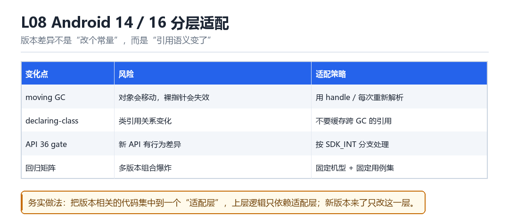

Android 14 / 16 分层适配
moving GC、declaring-class 引用、API 36 gate、跨版本回归
版本差异不是“改个常量”，而是“引用语义变了”。

8.1 四个变化点
| 变化 | 风险 | 策略 |
|---|---|---|
| moving GC | 对象会移动，裸指针失效 | 用 handle 或每次重新解析 |
| declaring-class 引用 | 类引用关系变化 | 不缓存跨 GC 的引用 |
| API 36 gate | 新 API 行为差异 | 按 SDK_INT 分支 |
| 回归矩阵 | 多版本组合爆炸 | 固定机型 + 固定用例集 |
8.2 适配层的价值
把版本相关的代码集中到一个“适配层”，上层业务逻辑只依赖适配层。这样新版本来了只改一处，而不是满项目找 if (sdk >= xx)。
class ArtAdapter {
public:
virtual void* get_entrypoint(ArtMethod*) = 0;
virtual void set_entrypoint(ArtMethod*, void*) = 0;
virtual void ensure_deoptimized(ArtMethod*) = 0;
};
// 每个 API 级别一个实现，工厂按运行时能力选择8.3 本章自测
- moving GC 为什么会破坏裸指针方案？
- 适配层解决了什么问题？
- 回归矩阵该怎么选机型？
- declaring-class 引用为什么不能跨 GC 缓存？
8.4 深入：moving GC 为什么致命
在 moving GC 下，对象在内存里会“搬家”。你缓存了一个裸指针，GC 之后它指向的可能已经是别的对象——轻则读到垃圾，重则崩溃。
| 场景 | 后果 | 对策 |
|---|---|---|
| 缓存 ArtMethod* | GC 后失效 | 每次重新解析 |
| 缓存 jobject | 引用失效 | 用 global reference |
| 缓存 Class* | 类可能被卸载 | 用 handle |
8.5 实战：验证“GC 后仍有效”
for (let i = 0; i < 5; i++) {
Java.perform(() => { Java.use('java.lang.System').gc(); });
Thread.sleep(500);
}
// 之后再调用一次 hook，看是否仍然正常8.6 原理推演：为什么“版本适配”会周期性变难
因为 ART 的实现细节（对象布局、GC 策略、调用约定）会随版本演进。每到大版本，总有一批“依赖内部结构”的代码失效——这不是 bug，而是“依赖未公开实现”的必然代价。
| 年份 | 主要变化 | 影响面 |
|---|---|---|
| Android 8 | JIT 成熟 | hook 时机 |
| Android 10 | 分区存储 | 文件访问 |
| Android 12 | 更严格的后台限制 | 进程存活 |
| Android 14+ | GC 与 ArtMethod 调整 | Java hook |
应对策略只有一条：把“依赖内部结构”的代码集中到适配层，让上层不受影响。
8.7 数据细节：适配层的接口设计
get_entrypoint(ArtMethod*)
set_entrypoint(ArtMethod*, void*)
ensure_deoptimized(ArtMethod*)
get_declaring_class(ArtMethod*)
make_backup(ArtMethod*)8.8 深入：API 36 的门槛意味着什么
新 API 级别往往会带来“行为变更”而不是“接口变更”。也就是说，同样的调用，返回值或副作用可能不同。这类变化最难发现——因为代码没报错。
| 变化类型 | 表现 | 发现方式 |
|---|---|---|
| 接口消失 | 编译/运行报错 | 容易 |
| 行为变更 | 结果不同但不报错 | 需回归测试 |
| 默认值变更 | 边界情况不同 | 需边界用例 |
所以“分层适配”的重点不是“处理报错”，而是“用回归测试覆盖行为变更”。
8.9 深入：一个适配层的目录结构
art/adapter.h // 统一接口
art/adapter_api30.cpp // 老实现
art/adapter_api34.cpp
art/adapter_api36.cpp
art/factory.cpp // 运行时按能力选择注意最后一行：工厂是“按能力选择”而不是“按版本选择”。比如“有这个符号就用新路径”，而不是“SDK >= 36 就用新路径”。前者能覆盖厂商定制，后者不能。
8.10 实战：回归矩阵的最小集合
| 设备 | 版本 | 用途 |
|---|---|---|
| 最低支持机型 | 老版本 | 保证不退化 |
| 主流机型 | 当前主流 | 主力验证 |
| 最新机型 | 最新版本 | 提前发现 |
同一份代码，在两台机器上各崩一次
回归日，Android 14 的机器跑满八项用例全绿；Android 16 的机器在'full GC'那一格挂了：SIGSEGV，栈顶指向一个看起来完全合法的 ArtMethod*。把 L07 的根因都修完还是崩。最后发现问题不在 hook 逻辑，而在模块缓存了一个跨 GC 的裸指针——Android 14 的 GC 不常搬对象，它运气好；Android 16 的 moving GC 一挪，指针立刻指向旧地址。版本差异改的不是常量，是引用的语义。
另一台机器上，崩的是 declaring-class 引用：模块把 GcRoot<mirror::Class> 的裸值存进了自己的全局表，GC 之后类对象被移动，表里那份成了悬空引用。这两类问题的共同形状是'缓存了本该每次重新解析的东西'。适配层要解决的，就是让上层代码再也拿不到这种会过期的句柄。
四个变化点，谁动了什么
- moving GC → 对象地址：并发复制式 GC 在回收期搬动 Java 对象与类对象；结果是任何跨 GC 存活的裸
ArtMethod*/mirror::Class*都可能失效。 - 适配层 → 上层：用
Handle/GcRoot包装，或干脆只存'类名 + 签名'，需要时现场解析；结果是上层永远拿不到会过期的地址。 - declaring-class 引用 → 类关系：新版本调整了 ArtMethod 与声明类之间的引用方式；结果是 backup 若沿用旧引用，GC 后类归属错乱。
- 适配层 → backup：为不同版本分别构造 backup 的 declaring-class 装配逻辑，并在 full GC 后重新校验；结果是 backup 与本体始终指向同一份有效类元数据。
- API 36 gate → 隐藏 API 校验：新 SDK 对
VMRuntime/DexFile等接口的访问限制再收紧；结果是原本能过的反射路径开始抛异常或被静默拒绝。 - 适配层 → 工厂：
ArtAdapter按运行时能力选实现，上层只依赖get_entrypoint等纯虚接口；结果是新版本来了只加一个实现类，业务代码一行不动。
第 2 拍里'只存签名'是最省事的策略，代价是每次调用多一次查表。对热点方法这未必划算，所以适配层通常提供两档：resolve_once() 给冷路径，Handle 给热路径——由调用方自己声明'我这个引用要活多久'，比框架统一猜更可靠。
把回归矩阵收紧成五条
- 选机型：最老支持版本、当前主流、最新版本各一台；再加一台已知 moving GC 行为激进的 OEM 机型做压力项。
- 固定用例集：L10 的八项用例原样跑，额外补'多轮 System.gc() 后重入'与'运行中切换模块'两项。
- 固定环境：同一 App 版本、同一模块产物哈希、同一注入时机，冷启动前清 logcat 与 tombstone。
- 记录路径：把 L07 能力探测选中的路径写进每份报告；不同路径的失败要分开统计。
- 判据统一：全部以'回调次数 == 调用次数且无 native crash'为准，不靠肉眼看日志。
矩阵别贪多。机型铺到十几台之后，维护成本会超过它带来的信息量——因为差异几乎都集中在'GC 行为'与'隐藏 API 校验'两处，三到四台有代表性的机器足够把这两条轴覆盖完。真正容易漏的是第 4 条：不记录路径，你就分不清'这个实现在 16 上不行'还是'16 选中了另一条实现'。
可复现：一条命令跑出版本差异
# 1. 确认 SDK 与 GC 类型
adb shell getprop ro.build.version.sdk
adb shell getprop dalvik.vm.gctype
# 2. 强杀后冷启动，抓初始化路径（L07 的能力表日志）
adb shell am force-stop com.example.app
adb logcat -c; adb shell monkey -p com.example.app 1
adb logcat -s Adapter:V | grep -E 'capability|selected|sdk'
# 3. 触发多轮 full GC 后重入，看是否 SIGSEGV
adb logcat -s Probe:V | grep -E 'gc|reenter|alive'
# 4. 有崩溃就取 tombstone 并符号化
adb shell ls /data/tombstones/ | tail -1看到什么算成功：两台机器都打印出 selected 且路径可以不同，GC 后 reenter 与 alive 成对出现，调用次数与回调次数相等，/data/tombstones/ 没有新增文件。看到什么算失败：14 上 selected 指向旧路径、16 上指向新路径但 reenter 之后立刻没有 alive——那是裸指针没换 Handle；或者两台都打印 selected 却都崩，说明适配层选路本身没错，问题在 backup 的declaring-class 装配。第 1 步的 dalvik.vm.gctype 不能省，它决定了这次回归有没有真正压到moving GC。
| 变化点 | Android 14 | Android 16 / API 36 | 失败表现 | 适配策略 |
|---|---|---|---|---|
| moving GC | 搬动少，裸指针常侥幸可用 | 并发复制，对象地址会变 | GC 后 SIGSEGV | Handle / 每次重解析 |
| declaring-class | 引用关系稳定 | 引用方式调整 | backup 类归属错乱 | 分版本装配 + GC 后校验 |
| dex method index | 索引可缓存 | 语义变化 | 静默不生效 | 按签名解析（L07） |
| 隐藏 API gate | 限制较松 | 校验收紧 | 反射被拒 / 抛异常 | 能力探测 + 多路径 |
| 回归矩阵 | 单一机型即可 | 需覆盖 GC 与 gate 两条轴 | 绿了但线上崩 | 3~4 台固定机型 |
把适配层与第三部 F11 的兼容总表、L07 的能力探测串起来看，就是一条完整的版本工程链：探测出能力 → 选一条实现 → 用适配层把差异关在门内。第四部 M05 讲硬件断点在不同内核上的Perf 生命周期时，用的也是'能力探测 + 多路径'，只是探测对象换成了内核特性；第二部 K06 用 BTF 取 offset 免于硬编码结构，与这里免于硬编码版本是同一个习惯。训练营 T03 要求做完整一轮改进，把'加一台激进 GC 机型'补进矩阵，通常就是最容易见效的一步。